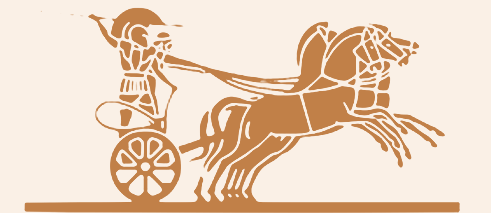

<meta charset="utf-8">
<title>Разбор логотипа Archiwood</title>
<meta name="claude:viewport-fit-sides" content="cover">
<style>
  /* Увеличенный рисунок с номерами деталей сверху, ниже — список деталей и что из этого следует. */
  :root {
    --cream: #faf0e6;
    --paper: #fffaf4;
    --copper: #c18048;
    --copper-deep: #9a5f2f;
    --stone: #7d7a74;
    --ink: #2a2420;
    --line: rgba(193, 128, 72, .35);
    --f-display: 'Cormorant', 'Cormorant Garamond', Georgia, serif;
    --f-body: Arial, 'Helvetica Neue', Helvetica, sans-serif;
    color-scheme: light;
  }
  body { margin: 0; background: var(--cream); color: var(--ink); font: 16px/1.6 var(--f-body);
    padding-left: max(16px, env(safe-area-inset-left, 0px)); padding-right: max(16px, env(safe-area-inset-right, 0px)); }
  main { max-width: 1100px; margin: 0 auto; padding-block: 40px 70px; display: grid; gap: 36px; }
  h1 { margin: 0; font: 500 clamp(34px, 5vw, 52px)/1.05 var(--f-display); color: var(--copper-deep); }
  h2 { margin: 0 0 12px; font: 500 28px/1.15 var(--f-display); color: var(--copper-deep); }
  .lead { margin: 10px 0 0; color: var(--stone); max-width: 66ch; }
  figure { margin: 0; position: relative; background: var(--paper); border: 1px solid var(--line); }
  .stage { position: relative; }
  figure img { display: block; width: 100%; height: auto; }
  .pin {
    position: absolute; transform: translate(-50%, -50%); width: 26px; height: 26px; border-radius: 50%;
    display: grid; place-items: center; background: var(--ink); color: var(--cream); font: bold 12px/1 var(--f-body);
    box-shadow: 0 0 0 3px rgba(250, 240, 230, .9); cursor: default;
  }
  .pin:hover, .pin.is-on { background: var(--copper-deep); }
  figcaption { padding: 10px 14px; border-top: 1px solid var(--line); color: var(--stone); font-size: 13px; }
  .cols { display: grid; grid-template-columns: repeat(2, minmax(0, 1fr)); gap: 0 40px; }
  ol { margin: 0; padding: 0; list-style: none; counter-reset: n; }
  li { display: grid; grid-template-columns: 30px minmax(0, 1fr); gap: 12px; padding: 10px 0; border-top: 1px solid var(--line); counter-increment: n; }
  li::before { content: counter(n); font: bold 13px/26px var(--f-body); color: var(--copper-deep); }
  li b { font-weight: bold; }
  li span { display: block; color: var(--stone); font-size: 14px; }
  li:hover { background: rgba(193, 128, 72, .08); }
  .box { background: var(--paper); border: 1px solid var(--line); padding: 22px 24px; }
  .box p { margin: 0 0 10px; }
  .box p:last-child { margin: 0; }
  .ways { display: grid; grid-template-columns: repeat(3, minmax(0, 1fr)); gap: 14px; }
  .ways article { background: var(--paper); border: 1px solid var(--line); padding: 18px 20px; display: grid; gap: 8px; align-content: start; }
  .ways h3 { margin: 0; font: 500 22px/1.2 var(--f-display); color: var(--copper-deep); }
  .ways p { margin: 0; color: var(--stone); font-size: 14px; }
  .tag { justify-self: start; padding: 4px 10px; border: 1px solid var(--line); font-size: 11px; letter-spacing: .1em; text-transform: uppercase; color: var(--copper-deep); }
  @media (max-width: 800px) { .cols, .ways { grid-template-columns: 1fr; } .pin { width: 20px; height: 20px; font-size: 10px; } }
</style>
<link rel="stylesheet" href="https://fonts.googleapis.com/css2?family=Cormorant:wght@500&display=swap">

<main>
  <header>
    <h1>Разбор логотипа Archiwood</h1>
    <p class="lead">Колесница из логотипа, увеличенная в шесть раз. Номера стоят на каждой детали — наведите на номер в списке, и он подсветится на рисунке.</p>
  </header>

  <figure>
    <div class="stage">
    
    <span class="pin" data-n="1" style="left:27.9%;top:38%">1</span>
    <span class="pin" data-n="2" style="left:11.8%;top:5.7%">2</span>
    <span class="pin" data-n="3" style="left:36.4%;top:11.5%">3</span>
    <span class="pin" data-n="4" style="left:34.6%;top:21%">4</span>
    <span class="pin" data-n="5" style="left:53.6%;top:30.3%">5</span>
    <span class="pin" data-n="6" style="left:20.5%;top:52.5%">6</span>
    <span class="pin" data-n="7" style="left:29.6%;top:78.7%">7</span>
    <span class="pin" data-n="8" style="left:38.5%;top:66%">8</span>
    <span class="pin" data-n="9" style="left:77.5%;top:16%">9</span>
    <span class="pin" data-n="10" style="left:62%;top:47%">10</span>
    <span class="pin" data-n="11" style="left:83%;top:66%">11</span>
    <span class="pin" data-n="12" style="left:48.2%;top:84%">12</span>
    <span class="pin" data-n="13" style="left:44.6%;top:50.8%">13</span>
    <span class="pin" data-n="14" style="left:69.6%;top:96.7%">14</span>
    </div>
    <figcaption>Весь рисунок колесницы в исходном файле — около 280 × 120 точек. Детали ниже прочитаны по этому увеличению.</figcaption>
  </figure>

  <section>
    <h2>Что нарисовано</h2>
    <div class="cols">
      <ol>
        <li data-n="1"><div><b>Воин с копьем</b><span>Стоит в колеснице сзади. Шлем, панцирь, короткая юбка в складку.</span></div></li>
        <li data-n="2"><div><b>Копье</b><span>Длинное и тонкое, в поднятой правой руке воина, отведено назад и вверх.</span></div></li>
        <li data-n="3"><div><b>Гребень шлема</b><span>Изогнутый гребень от макушки назад.</span></div></li>
        <li data-n="4"><div><b>Возничий</b><span>Второй человек впереди воина, наклонен к коням, держит вожжи.</span></div></li>
        <li data-n="5"><div><b>Вожжи</b><span>Пучок натянутых веревок от рук возничего к головам коней.</span></div></li>
        <li data-n="6"><div><b>Борт колесницы</b><span>Овальное ограждение кузова на уровне колен.</span></div></li>
        <li data-n="7"><div><b>Колесо</b><span>Восемь спиц, ступица в центре, толстый обод.</span></div></li>
      </ol>
      <ol style="counter-reset: n 7">
        <li data-n="8"><div><b>Дышло</b><span>Брус, который соединяет колесницу с упряжкой.</span></div></li>
        <li data-n="9"><div><b>Головы четырех коней</b><span>Идут лесенкой, каждая в уздечке, гривы подняты.</span></div></li>
        <li data-n="10"><div><b>Туловища внахлест</b><span>Четыре коня бегут плотным рядом; их отделяют только тонкие светлые линии.</span></div></li>
        <li data-n="11"><div><b>Передние ноги</b><span>Выброшены вперед в прыжке — самый динамичный момент рисунка.</span></div></li>
        <li data-n="12"><div><b>Задние ноги</b><span>Отталкиваются от земли, почти вертикальные пучки линий.</span></div></li>
        <li data-n="13"><div><b>Хвосты</b><span>Развеваются назад, к колесу.</span></div></li>
        <li data-n="14"><div><b>Линия земли</b><span>Отделяет рисунок от надписи ARCHIWOOD.</span></div></li>
      </ol>
    </div>
  </section>

  <section class="box">
    <h2>Почему автоматически не получается</h2>
    <p>Это гравюра: четыре коня и два человека нарисованы одним пятном цвета, а всё, что их разделяет, — светлые линии толщиной в одну-две точки. В рисунке нет информации о том, какой конь ближе, где кончается одна нога и начинается другая, как выглядит конь сбоку.</p>
    <p>Программа может только выдавить или выпуклить это пятно — получается плоская медаль, где всё сливается. Чтобы кони и люди «ожили» и стали объемными по отдельности, каждую фигуру нужно заново построить руками: как скульптор лепит барельеф по эскизу.</p>
  </section>

  <section>
    <h2>Как сделать логотип живым</h2>
    <div class="ways">
      <article>
        <span class="tag">Лучший результат</span>
        <h3>3D-скульптура</h3>
        <p>3D-художник лепит в Blender или ZBrush четырех коней, воина, возничего, колесницу как отдельные объемные фигуры по этому разбору. Получается настоящий объем со всех сторон, кони могут скакать, колесо — крутиться. Я подготовлю техническое задание с разбором и референсами.</p>
      </article>
      <article>
        <span class="tag">Делаю я</span>
        <h3>Многослойная анимация</h3>
        <p>Я разрезаю рисунок на слои по этому разбору: дальние кони, ближний конь, колесница, колесо, возничий, воин с копьем. Слои стоят на разной глубине и двигаются отдельно: колесо вращается, кони покачиваются в ритме галопа, вожжи и копье живут. Объем — как у театральной декорации, не скульптура.</p>
      </article>
      <article>
        <span class="tag">Нужно в любом случае</span>
        <h3>Исходник логотипа</h3>
        <p>Файл логотипа в векторе (AI, EPS, PDF, SVG) или крупный PNG — у дизайнера, в типографии, где делали вывеску или визитки. С ним любые варианты будут в разы чище: сейчас вся колесница — 280 точек в ширину.</p>
      </article>
    </div>
  </section>
</main>

<script>
  // подсветка номера на рисунке при наведении на пункт списка
  const pins = document.querySelectorAll('.pin');
  document.querySelectorAll('li[data-n]').forEach((li) => {
    const on = (v) => pins.forEach((p) => p.classList.toggle('is-on', v && p.dataset.n === li.dataset.n));
    li.addEventListener('mouseenter', () => on(true));
    li.addEventListener('mouseleave', () => on(false));
  });
</script>
